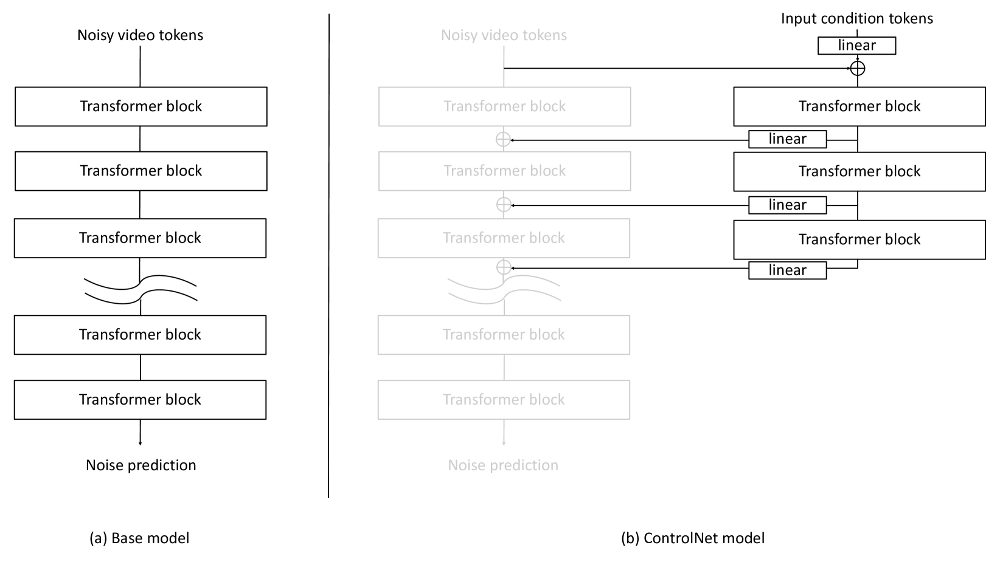
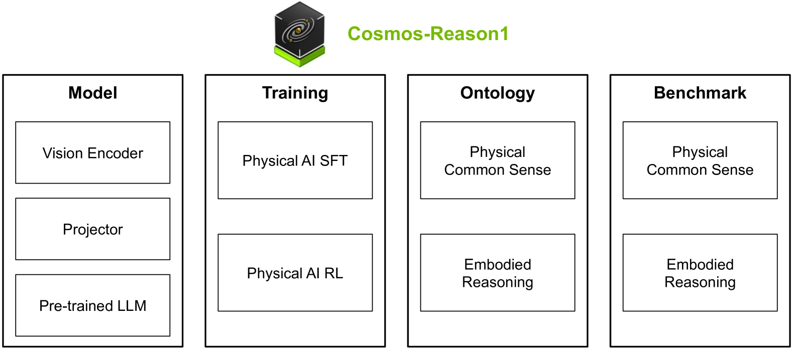

Jinwei Gu
Principal Research Scientist & Tech Lead · NVIDIA Research
Adjunct Associate Professor · CUHK CSE
I work on generative models, vision & world foundation models, computational photography, and 3D computer vision. I co-lead NVIDIA Cosmos (Best of CES 2025). Previously R&D Executive Director at SenseBrain, building AI imaging products deployed in flagship smartphones. Ph.D. from Columbia University; B.S. & M.S. from Tsinghua.
Featured Work
NVIDIA Cosmos — World Foundation Model Platform for Physical AI
I co-lead Cosmos: NVIDIA's open-source world foundation model platform for Physical AI (robotics & autonomous driving). Covers video tokenizers, world model pre-training & post-training, Cosmos-Transfer (Sim2Real control), Cosmos-Reason (embodied reasoning), and Cosmos-Policy.
Research & Product Impact
Career
Selected Publications [Full list on Google Scholar]




Honors & Awards
- Best of CES Award (2025) — NVIDIA Cosmos World Foundation Models
- CVPR 2019 Best Paper Finalist — Neural RGB→D Sensing
- CVPR 2018 Outstanding Reviewer
- Ph.D. Degree with Distinction, Columbia University, 2010
- Ph.D. Service Award, Columbia University, 2009
- Principal Scholarship Award, Tsinghua University, 2005
- Outstanding M.S. Thesis Award, Tsinghua University, 2005
Professional Service
Editorial
- Associate Editor, IEEE TPAMI (2022–)
- Associate Editor, IEEE Trans. Computational Imaging (2019–)
- IEEE Senior Member (2018–)
Area Chair / Organizer
- Area Chair: CVPR, ICCV, ECCV, NeurIPS
- Industry Chair: ICCP 2020, 2023
- Organizing Chair: MIPI Workshop, RichMediaGAI Workshop